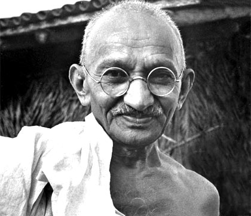
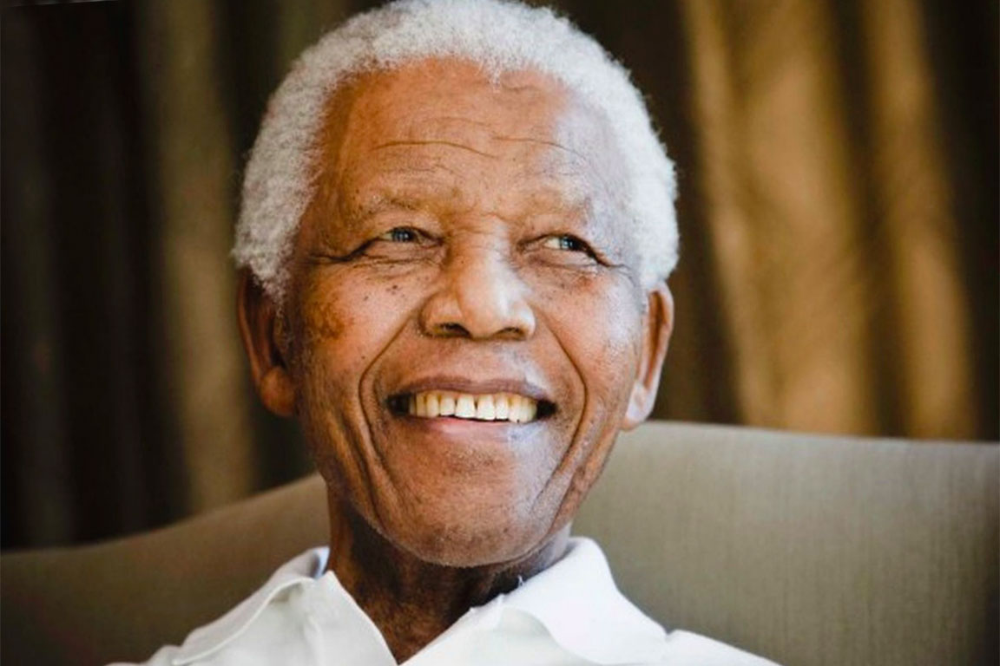
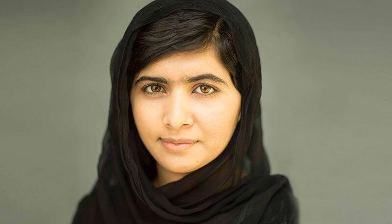
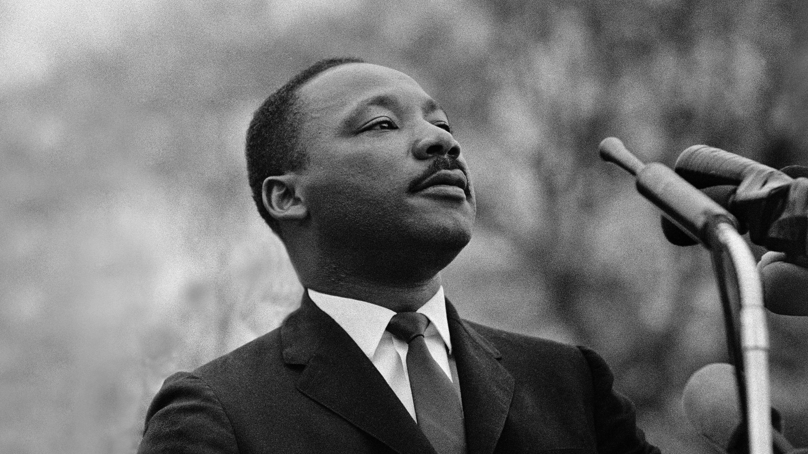
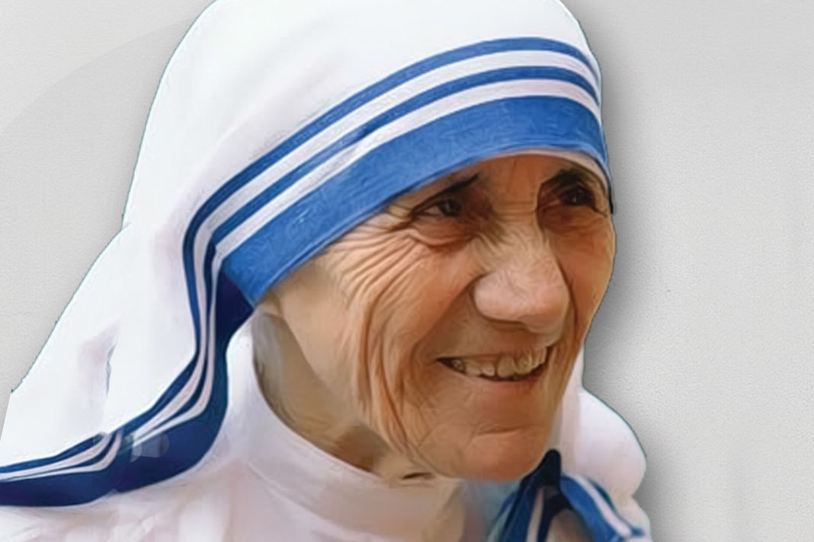

Pace...
"Immagina un mondo dove ogni sguardo è pieno di speranza, dove ogni parola è un abbraccio e ogni azione è
un
passo verso l'armonia. La pace non è solo l'assenza di conflitto, ma un mosaico VIBRANTE di colori,
culture
e idee che si intrecciano in un unico abbraccio globale. È un viaggio... un'emozione... un'opportunità
per
trasformare i nostri sogni in realtà e costruire un futuro brillante per tutti.
Benvenuti in questo spazio dedicato alla pace, dove insieme possiamo esplorare, imparare e
ispirarci a fare del mondo un luogo migliore
per noi stessi e le generazioni future."
Uniamoci tutti insieme al "Team Pace"!!
La pace nel mondo è come quel momento in cui finalmente riesci a battere il tuo punteggio più alto nel
tuo
gioco preferito: è un obiettivo epico che tutti vogliamo raggiungere! Ma, sai, non si tratta solo di
smettere di litigare o di condividere la tua pizza preferita. È molto di più!
Il mondo è come un'ENORMEEEE mappa del tesoro, piena di tesori culturali, avventure emozionanti e
persone fantastiche. Ora, il tesoro più grande che possiamo trovare è la pace. Ma lungo il cammino, ci
sono
mostri spaventosi, conflitti, ingiustizie e pregiudizi che cercano di tenerci lontani da quel tesoro
prezioso. (un po' come il tuo videogioco preferito).
Ma, ehi. Noi siamo tutti eroi in questa grande avventura! Possiamo combattere i mostri della guerra con
la nostra superforza chiamata tolleranza. Possiamo respingere le nuvole buie dell'ingiustizia con il
nostro
raggio di luce chiamato equità. E possiamo sconfiggere il drago del pregiudizio con la nostra arma
segreta
chiamata comprensione.
Quindi, ragazzi, fate anche voi la differenza. Insieme possiamo tracciare una mappa del
tesoro per un mondo più felice, più sicuro e più amorevole. E ricordate, anche il più piccolo gesto di
gentilezza può essere la chiave per aprire il grande tesoro della pace nel mondo!
Alcuni di noi hanno già fatto la loro parte.
- Mahatma Gandhi: Conosciuto come il "padre della nazione" in India, Gandhi ha guidato il movimento
per
l'indipendenza indiana SENZA VIOLENZA E SENZA RESISTENZA. Il suo esempio ha ispirato
milioni di persone in tutto il mondo a lottare per la giustizia e la libertà attraverso mezzi
pacifici.
Grazie a lui, il mondo è un posto migliore.

- Nelson Mandela: Ex presidente sudafricano che ha dedicato la sua vita alla lotta contro l'apartheid,
un
sistema di segregazione (mafia) razziale in Sudafrica. Dopo essere stato imprigionato per 27 anni,
Mandela ha
guidato il suo paese verso la riconciliazione nazionale e la costruzione di una società basata
sull'uguaglianza e sulla democrazia. E ci è riuscito.
Grazie a lui, il mondo è un posto migliore.

- Malala Yousafzai: Malala è diventata un simbolo globale per l'educazione delle ragazze e la lotta
contro
l'estremismo. Nonostante sia stata colpita da un proiettile dai talebani per il suo impegno a favore
dell'istruzione delle ragazze, Malala ha continuato a difendere i diritti delle donne e dei bambini
in tutto
il mondo, diventando la più giovane vincitrice del Premio Nobel per la pace.
Grazie a lei, il mondo è un posto migliore.

- Martin Luther King Jr.: Onorato anche qui Bollate Milanese, fu un Leader del movimento per i diritti
civili negli Stati Uniti, King ha guidato
campagne non violente per la desegregazione razziale, il diritto di voto per gli afroamericani e la
fine
della discriminazione. Il suo famoso discorso "I Have a Dream" (che sinceramente mi ha commosso,
ragazzi.) rimane un POTENTISSIMO richiamo
all'uguaglianza e
alla fraternità umana.
Grazie a lui, il mondo è un posto migliore.

- Madre Teresa di Calcutta: Come non nominarla... conosciuta per il suo lavoro umanitario tra i poveri
e i malati di
Calcutta, "Mère" Teresa ha
fondato le Missionarie della Carità, un ordine religioso dedicato all'aiuto dei più bisognosi.
Grazie a lei, il mondo è un posto migliore.

La pace sà di questo...

Allora, sei pronto ad unirti al Team Pace!?
Sii la differenza in un mondo indifferente.
Grazie per aver dedicato il tuo tempo alla lettura di questo sito web.